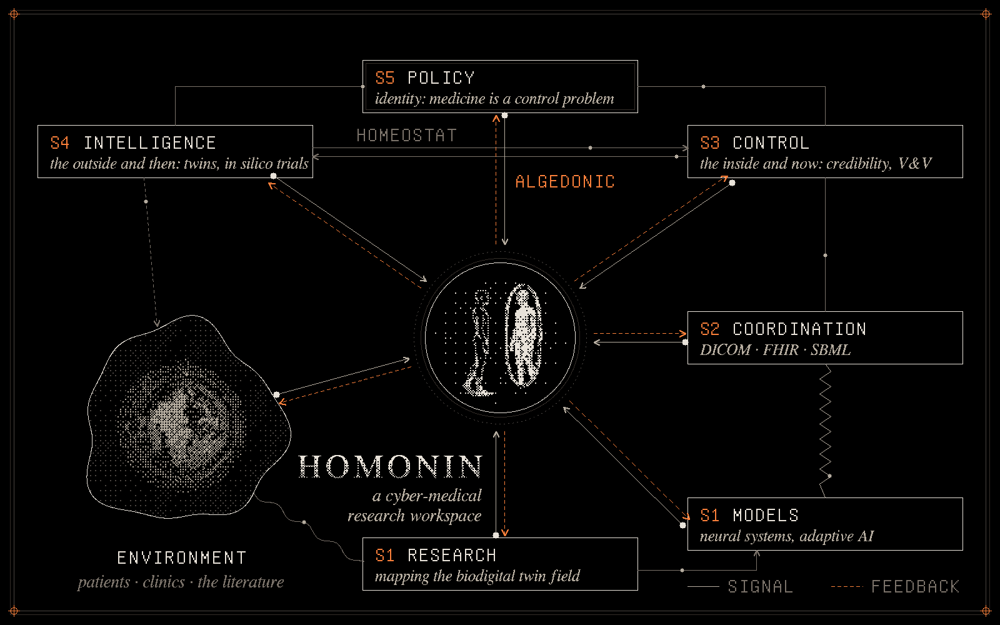
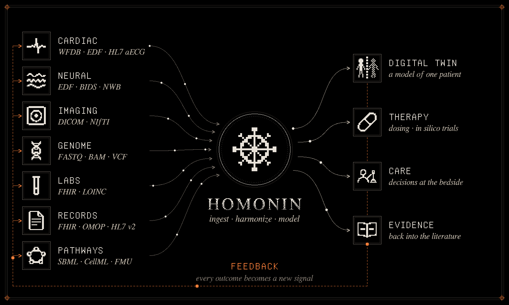

I · UC Irvine · MMXXVI
Arnav
Sharma
The body, computed.
I work where medicine meets computation: biodigital twins, medical AI, and the cybernetics that ties them together. I'm building Homonin, a cyber-medical research workspace.
II
Persona
A mask is a sign. It stands for a person without being one. A digital twin works the same way: it looks like the body, it is caused by the body's signals, and it can be acted on in the body's place. C. S. Peirce had three words for this.
-
01
Icon
It resembles. Imaging and anatomy: the twin as a likeness of the body.
-
02
Index
It is caused. ECG, labs, wearables: signals the body leaves behind, like a footprint.
-
03
Symbol
It stands for. Equations and code: the model that can be run, tested and acted on.
III
Opera
What I'm working on.
-
homonin.com
Homonin
A cyber-medical research workspace, built to turn what the body emits into models you can reason with.
-
Research
Biodigital twins
Mapping which parts of the body can already be computed. The heart and bone are largely solved, the brain is converging, and the cell is still open.
-
Models
Neural systems & adaptive AI
Biologically grounded AI: models of neural systems, and care that adapts to the signal it receives.
-
Source
Plates
A small dither engine that draws my GitHub profile: an 8×8 Bayer matrix on canvas, a hand-written GIF encoder, and a plate that re-renders itself every day.
IV
Systema
Medicine is a control problem. Above, the work organized as Stafford Beer's Viable System Model (Brain of the Firm, 1972), with Homonin at the center. Below, what the body emits, the formats it arrives in, and where it goes.


V
Pvlsvs
A live reading of my GitHub: contributions as a heartbeat, re-drawn every day by a GitHub Action.

VI
Write to me
About twins, models, Homonin, or anything that closes a loop.
aaarnavsssharma@gmail.com